CODING AGENTS AS PIXEL WORLD MODELS
traex/GPT-5.6-Sol · 0137
点击播放 · 原生 RGB 像素
逐轮保存的候选
回放视频、检查图与代码变化。
每份候选均可单独播放。实际图片检查记录在下方工具轨迹中。
候选 01播放与检查图
点击播放 · 原生 RGB 像素

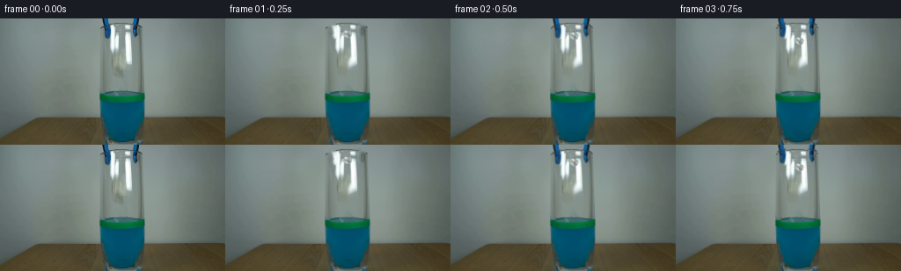
展开代码变化
--- 上一保存版本 +++ 本次保存版本 @@ -0,0 +1,256 @@ +"""Generate a short, locked-off paper-drop demonstration from first_frame.png. + +The source photograph supplies all of the static scene. The animation is kept +local to the tongs, paper, and liquid surface so that the photographed glass, +lighting, table, and camera remain stable. +""" + +from pathlib import Path +import math + +import cv2 +import numpy as np + +import artifact_io + + +CASE_DIR = Path(__file__).resolve().parent +W, H = 256, 144 +S = 4 # supersampling for the small animated details + + +def smoothstep(x): + x = np.clip(x, 0.0, 1.0) + return x * x * (3.0 - 2.0 * x) + + +def over(dst, src, alpha): + """Alpha composite uint8 BGR src over dst.""" + a = np.asarray(alpha, np.float32) + if a.ndim == 2: + a = a[:, :, None] + return np.clip(dst.astype(np.float32) * (1.0 - a) + + src.astype(np.float32) * a, 0, 255).astype(np.uint8) + + +def build_clean_plates(source): + """Remove the original tong pixels and the faint held-paper silhouette.""" + hsv = cv2.cvtColor(source, cv2.COLOR_BGR2HSV) + gray = cv2.cvtColor(source, cv2.COLOR_BGR2GRAY) + roi = np.zeros((H, W), np.uint8) + roi[:31, 112:164] = 1 + + # The photographed tongs are the two saturated blue/black components. + saturated_blue = ((hsv[:, :, 0] > 94) & (hsv[:, :, 0] < 123) & + (hsv[:, :, 1] > 72)) + black_edge = (gray < 55) + raw = ((saturated_blue | black_edge) & (roi > 0)).astype(np.uint8) * 255 + raw = cv2.morphologyEx(raw, cv2.MORPH_CLOSE, + cv2.getStructuringElement(cv2.MORPH_ELLIPSE, (3, 3))) + + n, labels, stats, _ = cv2.connectedComponentsWithStats(raw) + tool_masks = [] + total = np.zeros_like(raw) + for k in range(1, n): + x, y, w, h, area = stats[k] + if area > 35 and (x < 130 or x > 145): + m = np.zeros_like(raw) + m[labels == k] = 255 + # Include the soft photographic fringe without swallowing the rim. + m = cv2.dilate(m, np.ones((3, 3), np.uint8), iterations=1) + tool_masks.append(m) + total = cv2.bitwise_or(total, m) + + clean_tool = cv2.inpaint(source, total, 3, cv2.INPAINT_TELEA) + + # A faint, grey crumpled-paper shape is already visible in the central + # glass. Clean only its compact core, leaving the long glass highlights. + paper_old = np.zeros((H, W), np.uint8) + pts = np.array([[133, 46], [142, 43], [148, 53], [147, 69], + [143, 80], [134, 78], [130, 68], [131, 55]], np.int32) + cv2.fillPoly(paper_old, [pts], 255) + paper_old = cv2.GaussianBlur(paper_old, (3, 3), 0) + clean = cv2.inpaint(clean_tool, (paper_old > 90).astype(np.uint8) * 255, + 4, cv2.INPAINT_TELEA) + return clean, tool_masks + + +def add_moved_tongs(frame, source, masks, amount): + """Open the tong tips and lift them out of the vessel.""" + if amount <= 0.001: + return frame + out = frame + for m in masks: + ys, xs = np.where(m > 0) + left = float(xs.mean()) < 140 + pivot = (120.0 if left else 156.0, -4.0) + angle = (-15.5 if left else 15.5) * amount + mat = cv2.getRotationMatrix2D(pivot, angle, 1.0) + mat[1, 2] -= 8.5 * amount + warped_img = cv2.warpAffine(source, mat, (W, H), flags=cv2.INTER_LINEAR, + borderMode=cv2.BORDER_REPLICATE) + soft = cv2.GaussianBlur(m, (3, 3), 0.65).astype(np.float32) / 255.0 + warped_a = cv2.warpAffine(soft, mat, (W, H), flags=cv2.INTER_LINEAR, + borderMode=cv2.BORDER_CONSTANT) + out = over(out, warped_img, np.clip(warped_a, 0, 1)) + return out + + +def draw_liquid_motion(frame, index, impact): + """Draw short-lived ripples and a restrained splash at the liquid line.""" + if impact <= 0: + return frame + hi = cv2.resize(frame, (W * S, H * S), interpolation=cv2.INTER_CUBIC) + ov = hi.copy() + a = np.zeros((H * S, W * S), np.uint8) + + age = index - 8 + fade = max(0.0, 1.0 - age / 6.5) + cx, sy = int(139 * S), int(88 * S) + # Concentric perspective ellipses propagate along the narrow surface. + for j, col in enumerate([(21, 128, 91), (35, 151, 114)]): # BGR + radius = (5.0 + age * (2.0 + j * 0.5) + j * 4.0) * S + axes = (int(radius), int(max(1.2 * S, radius * 0.18))) + cv2.ellipse(ov, (cx, sy + j), axes, 0, 194, 346, col, + max(1, int(0.75 * S)), cv2.LINE_AA) + cv2.ellipse(a, (cx, sy + j), axes, 0, 194, 346, + int(150 * fade), max(1, int(0.9 * S)), cv2.LINE_AA) + + # Two tiny upward tongues and droplets only at first contact. + if 0 <= age <= 2: + sf = max(0.0, 1.0 - age / 2.5) + for side in (-1, 1): + x0 = cx + side * int((4.5 + age) * S) + top = int((84.5 - 2.2 * sf + age * 0.7) * S) + poly = np.array([[x0 - S, 89 * S], [x0, top], + [x0 + S, 89 * S]], np.int32) + cv2.polylines(ov, [poly], False, (24, 137, 103), S, cv2.LINE_AA) + cv2.polylines(a, [poly], False, int(175 * sf), S, cv2.LINE_AA) + if age <= 1: + dc = (x0 + side * S, top - int((1.5 + age) * S)) + cv2.circle(ov, dc, max(1, int(0.75 * S)), (35, 151, 119), -1, + cv2.LINE_AA) + cv2.circle(a, dc, max(1, int(0.9 * S)), int(180 * sf), -1, + cv2.LINE_AA) + + mixed = over(hi, ov, a.astype(np.float32) / 255.0) + return cv2.resize(mixed, (W, H), interpolation=cv2.INTER_AREA) + + +def paper_pose(i): + """Position and attitude: release, accelerating fall, impact, then bob.""" + if i <= 1: + return 139.0, 18.0, -5.0, 1.0 + if i <= 8: + # Analytic acceleration over the visible air column. + u = (i - 1) / 7.0 + y = 18.0 + 69.0 * (u ** 1.72) + x = 139.0 + 1.6 * math.sin(u * math.pi * 2.2) + ang = -5.0 + 46.0 * u + 8.0 * math.sin(u * math.pi * 3.0) + return x, y, ang, 1.0 + # It dips, rises, and settles as the trapped air keeps it at the surface. + age = i - 8 + y = 87.7 + 2.5 * math.exp(-age / 3.4) * math.sin(age * 1.65) + x = 139.0 + 1.1 * math.exp(-age / 5.0) * math.sin(age * 1.1) + ang = 38.0 + 11.0 * math.exp(-age / 4.0) * math.sin(age * 1.35) + return x, y, ang, 0.98 + + +def draw_paper(frame, x, y, angle, opacity, wet=0.0): + """Render an irregular, folded paper ball with several distinct facets.""" + hi = cv2.resize(frame, (W * S, H * S), interpolation=cv2.INTER_CUBIC) + layer = hi.copy() + alpha = np.zeros((H * S, W * S), np.uint8) + + # Fixed asymmetric crumpled-paper silhouette, transformed per frame. + base = np.array([[-5.1, -2.6], [-2.6, -4.4], [0.2, -3.7], + [3.2, -4.1], [5.0, -1.2], [4.1, 2.4], + [1.4, 4.0], [-1.5, 3.4], [-4.4, 2.1]], np.float32) + th = math.radians(angle) + rot = np.array([[math.cos(th), -math.sin(th)], + [math.sin(th), math.cos(th)]], np.float32) + q = (base @ rot.T + [x, y]) * S + q = np.round(q).astype(np.int32) + + # Soft contact shadow when it reaches the water. + if wet > 0: + sh = np.zeros_like(alpha) + cv2.ellipse(sh, (int(x * S), int(90.2 * S)), + (int(5.8 * S), int(1.25 * S)), 0, 0, 360, + int(80 * wet), -1, cv2.LINE_AA) + shadow_layer = np.full_like(hi, (35, 77, 61)) + hi = over(hi, shadow_layer, sh.astype(np.float32) / 255.0) + layer = hi.copy() + + cv2.fillPoly(layer, [q], (181, 184, 174), cv2.LINE_AA) + cv2.fillPoly(alpha, [q], int(242 * opacity), cv2.LINE_AA) + + # Facets and creases are clipped naturally because their vertices lie + # inside the silhouette. + center = np.array([x, y], np.float32) + facets = [ + (np.array([[-4.2, -1.7], [-2.6, -4.0], [0.1, -3.4], [-0.5, 0.0]]), + (207, 210, 201)), + (np.array([[-0.5, 0.0], [0.1, -3.4], [3.0, -3.7], [2.0, 0.3]]), + (160, 164, 155)), + (np.array([[-3.9, 1.6], [-0.5, 0.0], [1.2, 3.5], [-1.5, 3.1]]), + (193, 196, 186)), + (np.array([[-0.5, 0.0], [2.0, 0.3], [3.9, 2.0], [1.2, 3.5]]), + (143, 148, 141)), + ] + for poly, color in facets: + fp = ((poly.astype(np.float32) @ rot.T + center) * S).round().astype(np.int32) + cv2.fillPoly(layer, [fp], color, cv2.LINE_AA) + + # Thin folded seams and a bright torn edge. + for seg, color, width in [ + (([-3.6, -1.6], [-0.5, 0.0], [2.0, 0.3]), (119, 125, 120), 0.55), + (([-0.5, 0.0], [1.2, 3.4]), (128, 133, 126), 0.5), + (([-2.5, -3.7], [0.0, -3.2]), (225, 227, 217), 0.65), + ]: + pp = ((np.asarray(seg, np.float32) @ rot.T + center) * S).round().astype(np.int32) + cv2.polylines(layer, [pp], False, color, max(1, int(width * S)), cv2.LINE_AA) + + # Water tints the lower portion but leaves the pale crown readable. + if wet > 0: + yy = np.arange(H * S)[:, None] + water_a = np.clip((yy - 87.2 * S) / (3.2 * S), 0, 1) * (0.46 * wet) + water_a = water_a * (alpha.astype(np.float32) / 255.0) + tint = np.full_like(layer, (43, 122, 87)) + layer = over(layer, tint, water_a) + + composed = over(hi, layer, alpha.astype(np.float32) / 255.0) + return cv2.resize(composed, (W, H), interpolation=cv2.INTER_AREA) + + +def generate(): + rgb0 = cv2.cvtColor(cv2.imread(str(CASE_DIR / "first_frame.png")), + cv2.COLOR_BGR2RGB) + assert rgb0.shape == (H, W, 3) + source = cv2.cvtColor(rgb0, cv2.COLOR_RGB2BGR) + clean, tool_masks = build_clean_plates(source) + + frames_bgr = [source.copy()] # required pixel-identical frame 00 + for i in range(1, 20): + # At frame 1 the object is visibly poised between the tong jaws. From + # frame 2 onward the original faint silhouette is removed as it falls. + frame = clean.copy() + opening = smoothstep((i - 1) / 7.0) + frame = add_moved_tongs(frame, source, tool_masks, opening) + + impact = 1.0 if i >= 8 else 0.0 + frame = draw_liquid_motion(frame, i, impact) + x, y, ang, opacity = paper_pose(i) + wet = smoothstep((i - 7.6) / 2.2) + frame = draw_paper(frame, x, y, ang, opacity, wet) + frames_bgr.append(frame) + + frames = np.stack([cv2.cvtColor(f, cv2.COLOR_BGR2RGB) + for f in frames_bgr]).astype(np.uint8) + frames[0] = rgb0 # explicit exactness guard + artifact_io.save(frames, CASE_DIR) + return frames + + +if __name__ == "__main__": + generate()
候选 02播放与检查图

候选 03播放与检查图
点击播放 · 原生 RGB 像素
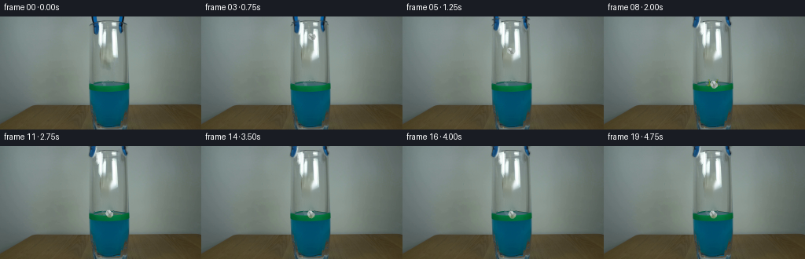
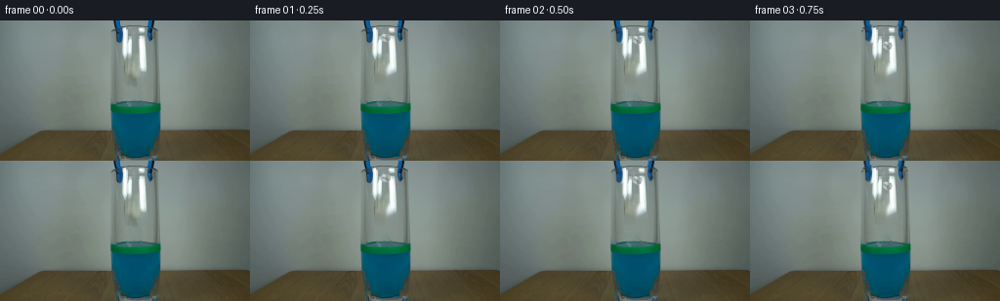
展开代码变化
--- 上一保存版本
+++ 本次保存版本
@@ -98,8 +98,7 @@
"""Draw short-lived ripples and a restrained splash at the liquid line."""
if impact <= 0:
return frame
- hi = cv2.resize(frame, (W * S, H * S), interpolation=cv2.INTER_CUBIC)
- ov = hi.copy()
+ ov = np.zeros((H * S, W * S, 3), np.uint8)
a = np.zeros((H * S, W * S), np.uint8)
age = index - 8
@@ -131,8 +130,9 @@
cv2.circle(a, dc, max(1, int(0.9 * S)), int(180 * sf), -1,
cv2.LINE_AA)
- mixed = over(hi, ov, a.astype(np.float32) / 255.0)
- return cv2.resize(mixed, (W, H), interpolation=cv2.INTER_AREA)
+ ov = cv2.resize(ov, (W, H), interpolation=cv2.INTER_AREA)
+ a = cv2.resize(a, (W, H), interpolation=cv2.INTER_AREA)
+ return over(frame, ov, a.astype(np.float32) / 255.0)
def paper_pose(i):
@@ -156,8 +156,7 @@
def draw_paper(frame, x, y, angle, opacity, wet=0.0):
"""Render an irregular, folded paper ball with several distinct facets."""
- hi = cv2.resize(frame, (W * S, H * S), interpolation=cv2.INTER_CUBIC)
- layer = hi.copy()
+ layer = np.full((H * S, W * S, 3), (181, 184, 174), np.uint8)
alpha = np.zeros((H * S, W * S), np.uint8)
# Fixed asymmetric crumpled-paper silhouette, transformed per frame.
@@ -176,9 +175,9 @@
cv2.ellipse(sh, (int(x * S), int(90.2 * S)),
(int(5.8 * S), int(1.25 * S)), 0, 0, 360,
int(80 * wet), -1, cv2.LINE_AA)
- shadow_layer = np.full_like(hi, (35, 77, 61))
- hi = over(hi, shadow_layer, sh.astype(np.float32) / 255.0)
- layer = hi.copy()
+ shadow_layer = np.full_like(frame, (35, 77, 61))
+ sh = cv2.resize(sh, (W, H), interpolation=cv2.INTER_AREA)
+ frame = over(frame, shadow_layer, sh.astype(np.float32) / 255.0)
cv2.fillPoly(layer, [q], (181, 184, 174), cv2.LINE_AA)
cv2.fillPoly(alpha, [q], int(242 * opacity), cv2.LINE_AA)
@@ -217,8 +216,9 @@
tint = np.full_like(layer, (43, 122, 87))
layer = over(layer, tint, water_a)
- composed = over(hi, layer, alpha.astype(np.float32) / 255.0)
- return cv2.resize(composed, (W, H), interpolation=cv2.INTER_AREA)
+ layer = cv2.resize(layer, (W, H), interpolation=cv2.INTER_AREA)
+ alpha = cv2.resize(alpha, (W, H), interpolation=cv2.INTER_AREA)
+ return over(frame, layer, alpha.astype(np.float32) / 255.0)
def generate():
可观测工具轨迹
实际执行的命令与返回图片。
命令 1exit 0
/bin/bash -lc 'cat prompt.txt'
命令 2exit 0
/bin/bash -lc "cat GENERATION_RULES.md && printf '\\n---FILES---\\n' && find . -maxdepth 2 -type f -printf '%p\\n' | sort"
命令 3exit 0
/bin/bash -lc "python3 - <<'PY'
from PIL import Image
im=Image.open('first_frame.png')
print(im.size, im.mode)
PY
ffmpeg -version | head -n 3
python3 - <<'PY'
mods=['cv2','numpy','PIL','imageio','torch']
for m in mods:
try:
x=__import__(m); print(m, 'OK', getattr(x,'__version__',''))
except Exception as e: print(m,'NO',e)
PY"命令 4exit 0
/bin/bash -lc 'cat artifact_io.py'
命令 5exit 0
/bin/bash -lc "python3 - <<'PY'
import cv2
im=cv2.imread('first_frame.png')
# Save nearest enlarged and edge maps
cv2.imwrite('.tmp/frame_up.png', cv2.resize(im,None,fx=4,fy=4,interpolation=cv2.INTER_NEAREST))
g=cv2.cvtColor(im,cv2.COLOR_BGR2GRAY)
e=cv2.Canny(g,30,90)
cv2.imwrite('.tmp/edges.png',e)
PY"命令 6exit 0
/bin/bash -lc "python3 - <<'PY'
from PIL import Image
im=Image.open('first_frame.png')
for name,box in [('top',(100,0,175,70)),('glass',(105,0,175,144)),('surface',(105,72,173,105))]:
im.crop(box).resize(((box[2]-box[0])*8,(box[3]-box[1])*8),Image.Resampling.NEAREST).save('.tmp/'+name+'.png')
PY"命令 7exit 0
/bin/bash -lc "python3 - <<'PY'
import cv2, numpy as np
im=cv2.imread('first_frame.png')
# contrast enhancement around central crop LAB clahe and unsharp
crop=im[0:100,100:180]
lab=cv2.cvtColor(crop,cv2.COLOR_BGR2LAB); l,a,b=cv2.split(lab); l=cv2.createCLAHE(3,(4,4)).apply(l)
out=cv2.cvtColor(cv2.merge([l,a,b]),cv2.COLOR_LAB2BGR)
out=cv2.resize(out,None,fx=8,fy=8,interpolation=cv2.INTER_NEAREST)
cv2.imwrite('.tmp/top_enhanced.png',out)
PY"命令 8exit 0
/bin/bash -lc "python3 - <<'PY'
from PIL import Image
im=Image.open('first_frame.png')
for box,n in [((110,0,166,96),'top_smooth'),((122,28,154,90),'paper')]:
c=im.crop(box).resize(((box[2]-box[0])*12,(box[3]-box[1])*12),Image.Resampling.LANCZOS)
c.save('.tmp/'+n+'.png')
PY"命令 9exit 0
/bin/bash -lc "python3 - <<'PY'
import cv2,numpy as np
im=cv2.imread('first_frame.png'); hsv=cv2.cvtColor(im,cv2.COLOR_BGR2HSV)
# BGR; grabber dark or saturated in top central, excluding gray rim perhaps
roi=np.zeros(im.shape[:2],np.uint8); roi[:64,108:174]=255
# saturated blue + dark
mask=(((hsv[:,:,0]>90)&(hsv[:,:,0]<135)&(hsv[:,:,1]>70)) | ((cv2.cvtColor(im,cv2.COLOR_BGR2GRAY)<55))) & (roi>0)
mask=mask.astype(np.uint8)*255
mask=cv2.morphologyEx(mask,cv2.MORPH_CLOSE,np.ones((3,3),np.uint8));
# components
num,lbl,st,cent=cv2.connectedComponentsWithStats(mask)
out=np.zeros_like(mask)
for i in range(1,num):
if st[i,4]>5: out[lbl==i]=255;print(i,st[i].tolist())
cv2.imwrite('.tmp/toolmask.png',out)
ov=im.copy();ov[out>0]=(0,0,255);cv2.imwrite('.tmp/toolmask_overlay.png',ov)
# sample unique ranges + coord pixels
for y in [0,5,10,20,30,40,50,60,70,80,86,90]:
print('y',y,[(x,im[y,x].tolist(),hsv[y,x].tolist()) for x in [115,120,123,126,135,140,150,155,160,165]])
PY"命令 10exit 0
/bin/bash -lc "python3 generate.py && python3 - <<'PY'
from PIL import Image
import numpy as np
im=np.array(Image.open('first_frame.png'))
f=np.array(Image.open('frames/00.png'))
print('exact first:',np.array_equal(im,f),'shape',f.shape,'dtype',f.dtype)
print('outputs:'); import os
for x in ['pixels.npz','inspection.png','transition_check.png','index.html']:
print(x,os.path.getsize(x))
PY"命令 11exit 0
/bin/bash -lc "python3 generate.py && python3 - <<'PY'
from PIL import Image,ImageDraw
import numpy as np, cv2
ims=[Image.open(f'frames/{i:02}.png') for i in range(20)]
# Full timeline, 5x4 contact sheet for visual dynamics check
sh=Image.new('RGB',(256*5,165*4),(25,28,35));d=ImageDraw.Draw(sh)
for i,im in enumerate(ims):
x=(i%5)*256;y=(i//5)*165; d.text((x+4,y+3),f'{i:02d} {i/4:.2f}s',fill='white');sh.paste(im,(x,y+21))
sh.save('.tmp/full_timeline.png')
arr=np.stack([np.array(x) for x in ims])
print('array',arr.shape,arr.dtype,'first_exact',np.array_equal(arr[0],np.array(Image.open('first_frame.png'))))
print('changed pixels per transition:',[int(np.any(arr[i]"'!=arr[i-1],axis=2).sum()) for i in range(1,20)])
# quantify fixed exterior: later variations should be concentrated center
var=np.any(arr[1:] != arr[1],axis=(0,3))
ys,xs=np.where(var);print('"'dynamic bounds after frame1', (xs.min(),ys.min(),xs.max(),ys.max()), 'count',len(xs))
PY"命令 12exit 0
/bin/bash -lc "python3 generate.py && python3 - <<'PY'
from PIL import Image,ImageDraw
import numpy as np, os
arr=np.stack([np.array(Image.open(f'frames/{i:02}.png')) for i in range(20)])
src=np.array(Image.open('first_frame.png'))
print('shape/dtype',arr.shape,arr.dtype,'frame00 exact',np.array_equal(arr[0],src))
print('transition changed pixels',[int(np.any(arr[i]"'!=arr[i-1],axis=2).sum()) for i in range(1,20)])
# full sheet
sh=Image.new('"'RGB',(1280,660),(25,28,35));d=ImageDraw.Draw(sh)
for i,a in enumerate(arr):
x=i%5*256;y=i//5*165;d.text((x+4,y+3),f'{i:02d} {i/4:.2f}s',fill='white');sh.paste(Image.fromarray(a),(x,y+21))
sh.save('.tmp/full_timeline_final.png')
# Contract output validation
z=np.load('pixels.npz')['pixels']; print('packed pixels',z.shape,z.dtype)
for i in range(1,20):
assert arr[i].shape==(144,256,3) and arr[i].dtype==np.uint8
assert arr.shape==(20,144,256,3)
# static area exact among generated frames away from central action
mask=np.ones((144,256),bool); mask[:100,105:175]=False
print('outside central unchanged frames1-19:',all(np.array_equal(arr[i][mask],arr[1][mask]) for i in range(2,20)))
print('artifacts',[(p,os.path.getsize(p)) for p in ('pixels.npz','index.html','inspection.png','transition_check.png')])
PY"视觉工具实际返回图片 1
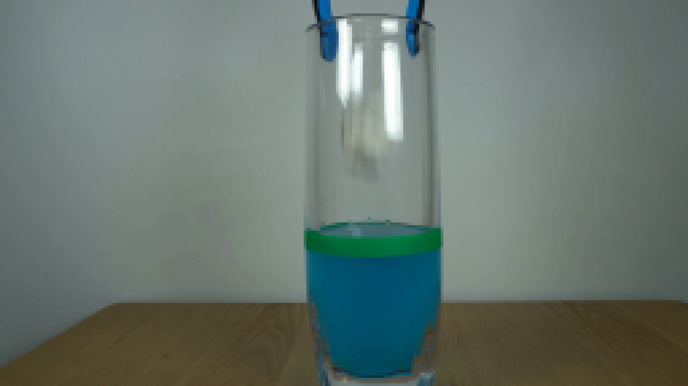
视觉工具实际返回图片 2
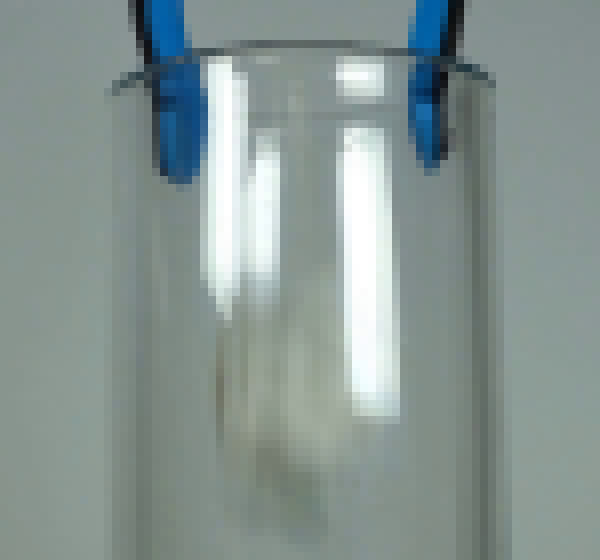
视觉工具实际返回图片 3
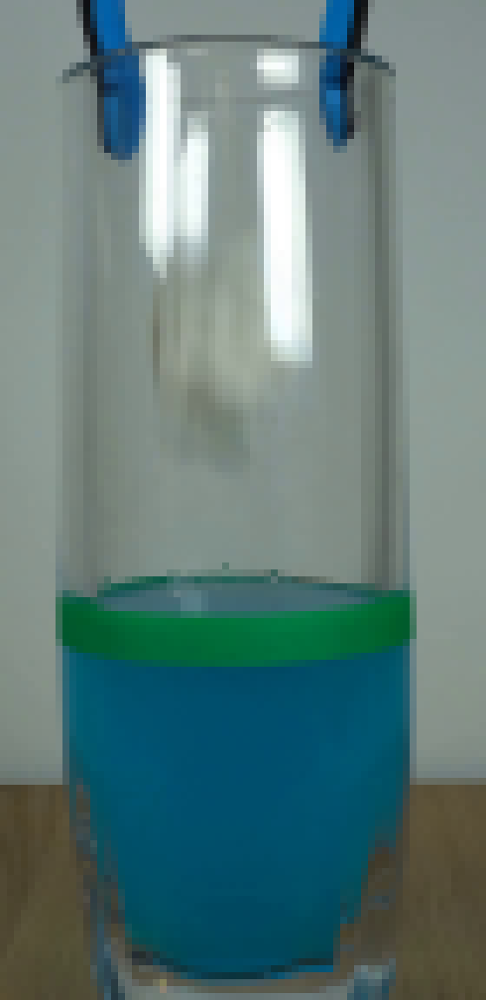
视觉工具实际返回图片 4
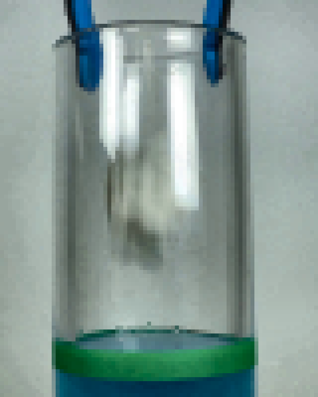
视觉工具实际返回图片 5
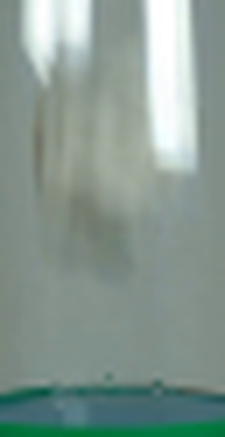
视觉工具实际返回图片 6
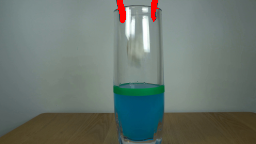
视觉工具实际返回图片 7
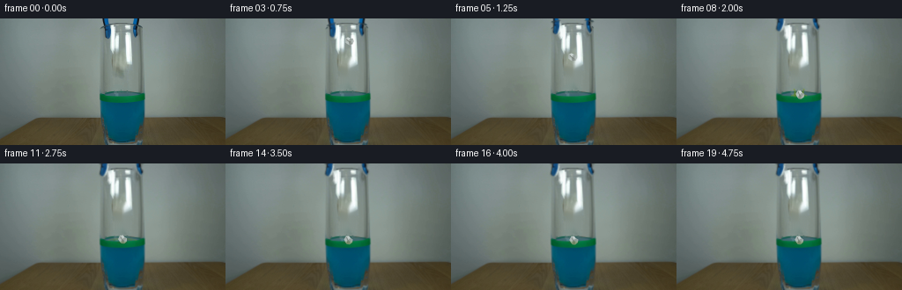
视觉工具实际返回图片 8

视觉工具实际返回图片 9
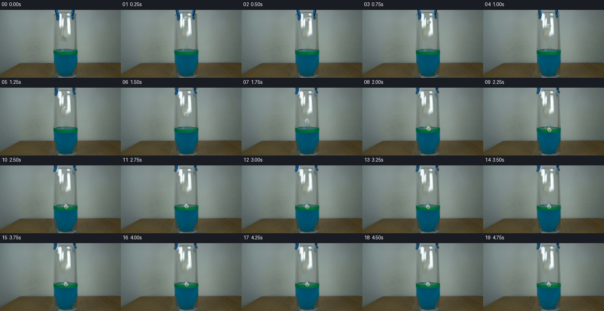
视觉工具实际返回图片 10
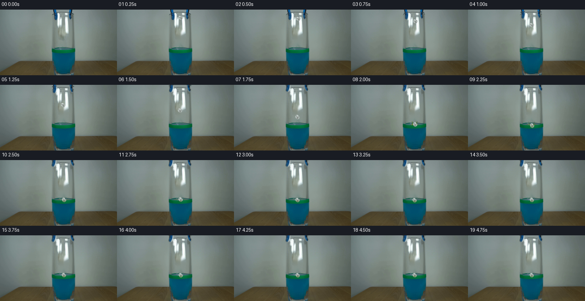
保存候选 3 份；完成命令 12 次；可验证图片返回 10 张。原始 API 响应与完整日志保留在本地。